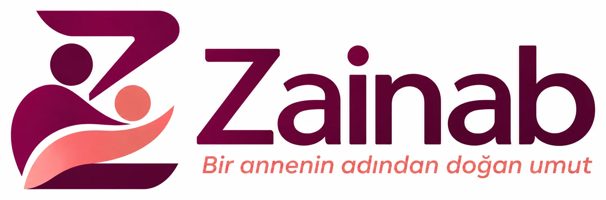

Zeynep Öner’in anısına.
ZAINAB adının arkasında bir isim ve güçlü bir niyet var: sevgiyi, saygıyı ve dayanışmayı yeni bir anlamla yaşatmak.

Bir anının, başkalarına uzanan yönü.
Bu web sitesi Zeynep Öner’in anısına hazırlanmıştır. ZAINAB adı, Zeynep isminin başka dillerdeki biçimiyle kurulan bir bağdan doğar.
Amaç, Türkiye'de kanserle yaşayan bireyler ve yakınları için anlaşılır bilgiye ve güvenilir destek kaynaklarına erişimi kolaylaştıracak bir dayanışma yapısı geliştirmektir.
Burada Zeynep Öner’in özel yaşamına dair doğrulanmamış biyografik ayrıntılara yer verilmemiştir. Aile tarafından onaylanan bilgiler ileride bu bölüme eklenebilir.
İsimden dayanışmaya.
İsim
ZAINAB, Zeynep adına bağlanan uluslararası bir yazılış. Anma hikâyesini görünür kılan bir marka tercihi.
Sembol
Z harfi ve birbirine yakın iki insan formu; yardım istemenin, yardım etmenin ve insan onuruna saygının görsel ifadesi.
زينب
Zeynep isminin Arapça yazılışı, kültürel kökenini hatırlatan ayrı bir görsel unsur olarak korunur. Ana marka adı ZAINAB’dır.